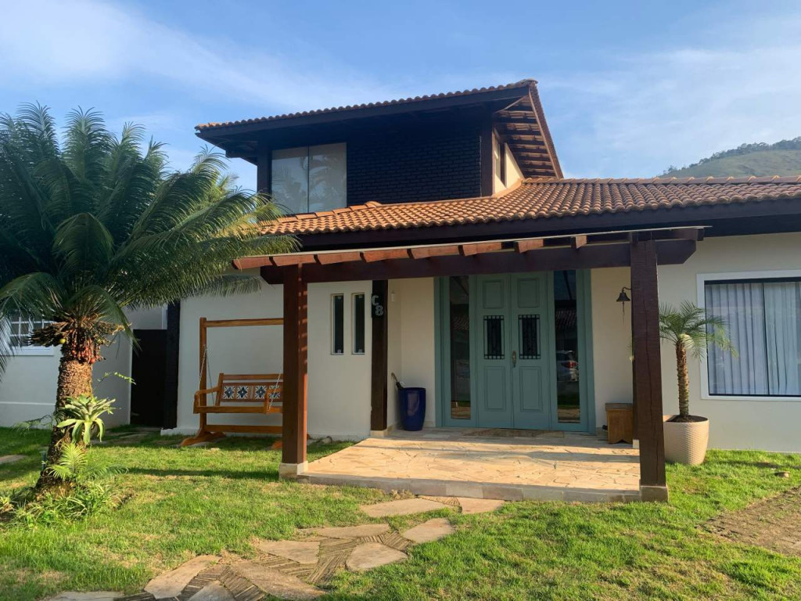

Carneiros
With a sea view, Bangalo Praia dos Carneiros offers accommodations with an outdoor pool, garden, and restaurant, just a few steps from Praia do Carneiro. This beachfront property provides access to a terrace, ping-pong, free private parking, and complimentary WiFi.